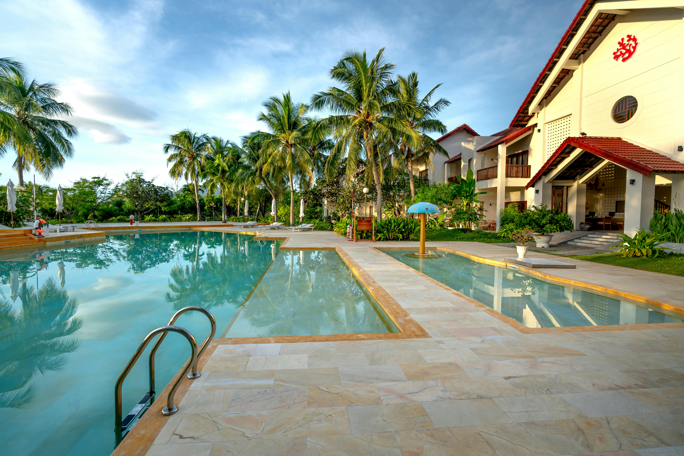

Lusso Verde All Inclusive Resort
Resort que combina luxo, sustentabilidade e uma imersão na natureza exuberante. Cercado por vegetação tropical, o hotel com uma experiência única de descanso em um ambiente eco-friendly.

Resort que combina luxo, sustentabilidade e uma imersão na natureza exuberante. Cercado por vegetação tropical, o hotel com uma experiência única de descanso em um ambiente eco-friendly.
O Lusso Verde All Inclusive Resort, localizado em uma área privilegiada do Jardim das Frutas, Brasil, é um resort que combina luxo, sustentabilidade e uma imersão na natureza exuberante. Cercado por vegetação tropical, o hotel oferece uma experiência única de descanso e requinte em um ambiente eco-friendly . Com 200 suítes de design contemporâneo, o Lusso Verde oferece acomodações que integram a sofisticação ao conforto. Todas as suítes possuem amplas janelas de vidro, proporcionando vistas panorâmicas para os jardins, lagos ou para o mar. Os quartos são equipados com banheiras de hidromassagem privativas e terraços com redes de descanso, permitindo aos hóspedes relaxar completamente. A gastronomia é um dos grandes destaques do resort. São cinco restaurantes gourmet que vão desde a alta cozinha italiana até pratos veganos preparados com ingredientes orgânicos cultivados na horta local. O bar à beira da piscina, inspirado em lounges europeus, oferece coquetéis exclusivos e vinhos importados, criando um ambiente sofisticado e descontraído.
Por pessoa
R$ 1.200Em até 8x sem juros
8x de R$150,00

Vila Alexandre
Salvador - BA